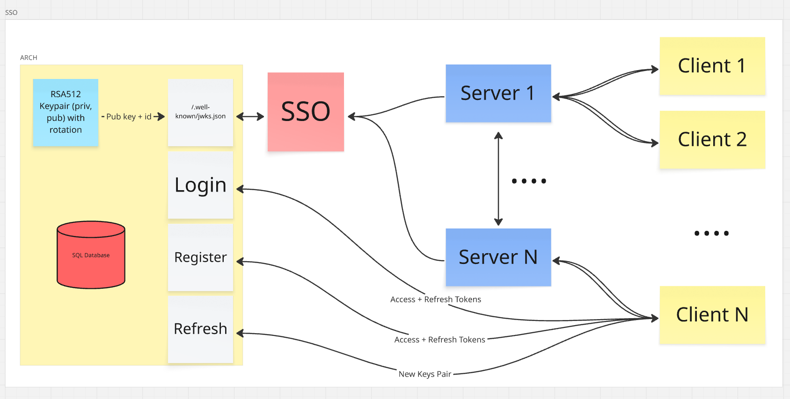

Auth Service Arch
Auth & Payment BPMN
Professional Experience

Fullstack Developer
Sirena AI · Nov 2025 – Present (11 months)
- Designed and implemented a BullMQ-based background processing platform supporting 5+ task types, including data synchronization, AI content generation, and third-party integrations.
- Implemented automatic recovery and retry mechanisms for background jobs, improving system resilience against temporary external service failures.
- Optimized Wildberries API integration by implementing rate-limit handling, retry policies, and centralized error monitoring, improving synchronization stability.
- Migrated backend services from AWS Lambda/Node.js to Python/FastAPI on VDS infrastructure, reducing infrastructure complexity and increasing control over performance and deployment processes.
- Refactored key backend modules, reducing component coupling and simplifying further development and maintenance.
- Introduced centralized production logging using Grafana Loki, reducing incident investigation time and improving service observability.
-
Designed and executed migration of more than 1 TB of data from DynamoDB and AWS S3 to ClickHouse, enabling
large-scale analytical processing.
1TB+ Data
Migrated - Developed and optimized a dynamic price calculation module, implementing efficient caching strategies in Redis and Valkey to ensure high system responsiveness.

Fullstack Developer
HappyHero, USA · Jul 2024 – Jun 2025 (1 year)
-
Acted as the lead backend engineer in building a Node.js (NestJS) platform from scratch, delivering the
product to production within 4 months.
Microservices
Architecture - Developed 70+ REST APIs for web and mobile clients, enabling core product functionality and user workflows.
- Designed a PostgreSQL schema consisting of 50+ business entities, providing a scalable foundation for future product growth.
- Implemented a scheduled analytics reporting service with incremental data processing, reducing system load and improving report availability.
- Integrated Azure OpenAI into platform business processes, automating user-facing workflows.
- Introduced production monitoring using Grafana and Prometheus, improving incident detection and service reliability.
-
Optimized backend services to achieve p95 response times below 100 ms.
p95 < 100ms
- Developed a fault-tolerant push notification subsystem supporting complex scheduling logic across 10+ time zones and delivering 50k+ notifications daily.
- Built a Telegram Web App for psychological test interactions.
- Contributed to development of an AI assistant using Python.

Software Engineer
First Line Outsourcing, Krasnodar · April 2024 – June 2025 (1 year 3 month)
Backend:
- Designed multiple data schemas on PostgreSQL and MongoDB for client projects.
- Integrated external APIs, payment systems, and third-party services.
- Configured Docker environments, CI/CD pipelines, and deployment processes on VPS/VDS.
- Participated in development and launch of 5+ commercial projects.
- Developed and maintained 3+ microservices for client products.
- Configured T-Bank payment gateway integration for the MDS project.
Профессиональный опыт
Fullstack-разработчик
Сирена АИ · Ноя 2025 – н.в. (11 месяцев)
- Спроектировал и реализовал систему фоновой обработки на BullMQ для 5+ типов задач (синхронизация данных, AI-генерация, интеграции), обеспечив асинхронное выполнение ресурсоёмких операций без влияния на пользовательский опыт.
- Реализовал автоматическое восстановление и retry-механизмы для фоновых задач, повысив устойчивость системы к временным сбоям внешних сервисов.
- Оптимизировал интеграцию с API Wildberries: реализовал обработку rate limits, retry-политику и централизованный мониторинг ошибок, повысив стабильность синхронизации данных.
- Мигрировал backend-сервисы с AWS Lambda/Node.js на Python/FastAPI и VDS-инфраструктуру, снизив инфраструктурную сложность и повысив контроль над производительностью и процессом развертывания.
- Выполнил рефакторинг ключевых backend-модулей, снизив связанность компонентов и упростив дальнейшее развитие и поддержку системы.
- Внедрил централизованное логирование на базе Grafana Loki, сократив время диагностики production-инцидентов и повысив прозрачность работы сервисов.
-
Спроектировал и реализовал миграцию более 1 ТБ данных из DynamoDB и AWS S3 в ClickHouse, обеспечив
аналитическую обработку больших объёмов данных.
1TB+ Data
Migrated - Покрыл критические участки бизнес-логики unit-тестами и участвовал во внедрении практик тестирования, снизив риск регрессий при развитии продукта.
- Разработал административную панель на Angular для внутренних пользователей AI-платформы.
Контрактор
Fullstack-разработчик
HappyHero · Июл 2024 – Июн 2025 (1 год)
-
Выступил ведущим инженером при создании backend-платформы на Node.js (NestJS) с нуля, обеспечив запуск
продукта в production за 4 месяца.
Microservices
Architecture - Разработал более 70 REST API для web- и mobile-клиентов, обеспечив поддержку ключевых пользовательских сценариев и развитие продуктовой функциональности.
- Спроектировал PostgreSQL-схему из 50+ бизнес-сущностей, заложив масштабируемую основу для развития продукта.
- Реализовал сервис формирования аналитических отчётов по расписанию с инкрементальной обработкой данных, снизив нагрузку на систему и повысив доступность аналитики.
- Интегрировал Azure OpenAI в бизнес-процессы платформы для автоматизации пользовательских сценариев.
- Настроил мониторинг production-сервисов на базе Grafana и Prometheus, повысив скорость обнаружения инцидентов и качество сопровождения системы.
-
Оптимизировал backend-сервисы до p95 менее 100 мс, обеспечив быстрый отклик пользовательских сценариев.
p95 < 100ms
- Разработал отказоустойчивую подсистему push-уведомлений с поддержкой 10+ таймзон и гарантированной доставкой более 50k сообщений в сутки.
- Разработал Telegram Web App для прохождения психологических тестов и взаимодействия с ботом.
- Участвовал в разработке AI-ассистента на Python.
Относится к работе в компании First Line Outsourcing
Инженер-программист
First Line Outsourcing, Краснодар · Апр 2024 – Июн 2025 (1 год 3 месяца)
Backend:
- Спроектировал множество схем данных на PostgreSQL и MongoDB для клиентских проектов.
- Интегрировал внешние API, платёжные системы и сторонние сервисы.
- Настраивал Docker-окружение, CI/CD-пайплайны и процессы деплоя на VPS/VDS.
- Участвовал в разработке и запуске более 5 коммерческих проектов.
- Разработал и поддерживал более 3 микросервисов для клиентских продуктов.
- Настроил работу платёжного шлюза Т-банка для проекта MDS.
ТК РФ 6 мес. | Работа по самозанятости

Пет-проекты
Дипломный проект - платформа для менеджмента задач и проектных команд
- Разработал Go-сервис синхронизации данных в реальном времени.
- Реализовал управление WebSocket-соединениями и маршрутизацию клиентов по рабочим пространствам.
- Организовал параллельную обработку событий для изолированных рабочих пространств с использованием горутин и каналов.
- Реализовал взаимодействие микросервисов через gRPC.
- Система включает отдельный сервис авторизации и клиентское веб-приложение.